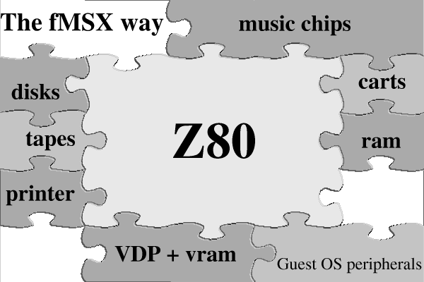
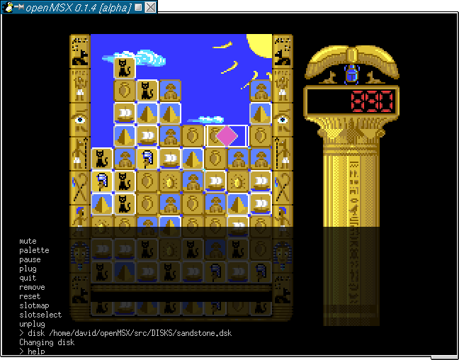

openMSX
MSX gebruikers en emulators, vroeger was het een behoorlijke haat-liefde verhouding. Tegenwoordig is het gebruik van een emulator een al meer door de vingers geziene praktijk en is het soms zelfs een behoorlijk stuk eenvoudiger. Een handige portable MSX werd nog steeds niet gebouwd, maar een laptop met een MSX-emulator kan al goede diensten bewijzen.
In het begin waren de emulators vrij simpel en voornamelijk bedoeld om de technisch simpelere MSX1 spellen te kunnen spelen. Later kwamen er MSX2 beelden bij en de complexere geluidschips. En hoe beter de emulators werden, hoe meer men verwachte dat alle programma's vlekkeloos op deze emulators zouden draaien. Voornamelijk de prachtige demo's die voor de MSX2 zijn geschreven, bezorgen de emulators de nodige moeilijkheden.
MSX emulators zijn dus zeker niet nieuw meer. Er zijn er al meerdere op het toneel verschenen, elk met zijn specifieke voor- en nadelen. Er zijn echter wel een hoop zaken die al deze emulators sterk gemeen hebben. De meeste van deze emulators zijn persoonlijke projecten van een enkele programmeur, die een sterke controle over hun emulator willen behouden. De binding tussen de emulator en de GUI is meestal vrij sterk wat de porteerbaarheid niet echt bevordert. Tevens valt op dat een groot aantal van de emulators een afgeleide zijn van de zogenaamde oer-MSX emulator fMSX.
Als de sources dan al worden aangeboden, dan is het meestal al vrij moeilijk om wijzigingen terug in de oorspronkelijke emulator te krijgen. Ook praktisch is er een klein onevenwicht. Voor de MS platforms is er ruime keuze aan emulators. Op bijna alle andere platforms is er enkel een afgeleide van fMSX beschikbaar en indien je een beetje geluk hebt, is ook de MSX emulatie van MESS beschikbaar.
Sinds kort is er een nieuwe emulator op het toneel verschenen. Er is echter iets speciaals aan deze emulator. Dit is de eerste emulator die onder de GPL wordt ontwikkeld en die als doel heeft de interne werking van de MSX zo dicht mogelijk te benaderen zonder zich te richten op een bepaalde klasse van programma's.
Technische specificaties
Voor de techneuten onder ons, laten we even stil staan bij de interne verschillen die er zijn tussen de meeste emulatoren en de nieuwe openMSX. De verschillen zijn onder te verdelen in enkele grote groepen:
- openMSX probeert om elke chip als aparte eenheid te emuleren, met stricte grenzen tussen beide
- De CPU is niet langer heer en meester van de emulatie
- Er is een duidelijke grens tussen wat de emulatie core betreft en de interface naar het guest-OS
openMSX is object georienteerd. Dat betekent dat in plaats van één (heel) groot
functioneel programma gekozen is voor een structuur waarbij elke chip een
apart programma is, die dan samen op een virtueel moederbord geprikt
worden.
Waar in andere MSX emulators het moederbord niet als aparte eenheid bestaat en onrechtstreeks verweven zit tussen de andere code in, is in dit geval het moederbord zeer expliciet aanwezig. Dit is namelijk het object waaraan alle andere chips zich moeten registreren om deel uit te maken van de uiteindelijke ge-emuleerde MSX. En net zoals in het het echt de koperbaantjes op het moederbord voor de communicatie tussen alle onderdelen zorgen, zo zorgt ook in openMSX het moederbord voor alle communicatie tussen de Z80 en alle andere chips.
 Sommigen onder ons hebben ooit misschien al wel eens met simpele elektronica projectjes gespeeld op hun MSX. Een veel gebruikt iets was om dan output via de printerport te laten lopen, en de input langs de joystickpoort terug in te lezen. Om dit soort zaken te na te bootsen in andere emulators zouden er op verschillende plaatsen in de code aanpassingen moeten gebeuren. Daarom is het concept van plugable devices niet beperkt gebleven tot het moederbord en z'n chips maar is verder doorgetrokken tot alle connectoren. Op deze manier manier kan een stuk code zich laten 'inpluggen' in de joystickpoort en in de paralelle poort. Tevens kan een stuk code zich beschikbaar stellen als connector door de juiste interface te implementeren. Op deze manier zijn de joystick splitters zoals gebruikt door sommige spellen op een een eenvoudige manier te maken. Ze registreren zich bij openMSX als joystickplugable, en aan de andere kant laten zij zich gebruiken om ge-emuleerde joysticks en muizen te laten inpluggen.
Sommigen onder ons hebben ooit misschien al wel eens met simpele elektronica projectjes gespeeld op hun MSX. Een veel gebruikt iets was om dan output via de printerport te laten lopen, en de input langs de joystickpoort terug in te lezen. Om dit soort zaken te na te bootsen in andere emulators zouden er op verschillende plaatsen in de code aanpassingen moeten gebeuren. Daarom is het concept van plugable devices niet beperkt gebleven tot het moederbord en z'n chips maar is verder doorgetrokken tot alle connectoren. Op deze manier manier kan een stuk code zich laten 'inpluggen' in de joystickpoort en in de paralelle poort. Tevens kan een stuk code zich beschikbaar stellen als connector door de juiste interface te implementeren. Op deze manier zijn de joystick splitters zoals gebruikt door sommige spellen op een een eenvoudige manier te maken. Ze registreren zich bij openMSX als joystickplugable, en aan de andere kant laten zij zich gebruiken om ge-emuleerde joysticks en muizen te laten inpluggen.
In openMSX heeft de CPU de overheersende taak verloren. In de andere emulators is het de CPU die in alles het initiatief neemt. De CPU bepaalt hoeveel T-states (=kloktikken) er voorbij gaan voor de VDP een interrupt kan generen, de CPU beslist hoeveel T-states hij uitvoert alvorens de VDP emulatie te verplichten om een lijn (of een heel scherm) te tekenen. Aangezien de CPU bij deze emulators in alles het voortouw neemt, "weet" de ge-emuleerde Z80 ook zaken waar hij eigenlijk niets van zou mogen weten. Bv. het verschil tussen PAL en NTSC wordt vertaald in het aantal T-states dat de CPU uitvoert alvorens er getekend en ge-interrupt wordt. Het uitlezen van het toetsenbord, muis en joystick van het guest OS wordt ook bepaald door de CPU van de ge-emuleerde MSX, terwijl dit eigenlijk los zou moeten staan van de emulatie kern. Tevens maakt dit soort ontwerp het moeilijk om op onvoorspelbare externe interrupts te reageren. Kortom, hoewel dit ontwerp zijn voordelen heeft naar eenvoudige implementatie en snelheid, wijkt dit toch een hoop af van de manier waarop de CPU in de echte wereld de zaken aanstuurt.
Er is ook een radicaal andere aanpak ten opzichte van de oudere emulators hoe tijd wordt afgehandeld. In de vorige paragraaf was er al sprake van de manier waarop de NTSC/PAL problematiek werd aangepakt door na een aantal T-states telkens 1 lijn te tekenen. Elke ervaren programmeur zal je vertellen dat het praktischer is in een computerprogramma tellers te laten aftellen naar nul. In de fMSX based emulators ga je dus de cpu steeds zien aftellen tot nul en dan terug beginnen met zijn startwaarde. Tevens gaan die emulators er makelijkheidshalve van uit dat een scherm steeds 255 lijnen hoog is (192/212 echte scherm en de rest border). Hierdoor wordt het bijzonder moeilijk om dingen te plannen in de emulator die slechts na enkele seconden gaan optreden. Dit vraagt immers extra tellers om bij te houden hoevaak de CPU herbegonnen is met tellen (50 a 60 keer per seconde!). Tevens werd van alle andere chips verwacht dat zij ook met dezelfde kloksnelheid als de CPU zouden rekenen om het geheel toch nog overzichtelijk te houden en niet met extra omzettingsfactoren rekening te moeten houden. Om dit soort zaken beter te kunnen opvangen is er binnen openMSX het emuTime concept onstaan. De achterliggende idee is dat de resolutie van de openMSX klok groot genoeg moest zijn om de snelste chip in zijn eigen eenheid te laten tellen, dat tijdsperiode van meerdere minuten opgeven zo simpel mogelijk moest zijn en dat de chips zich geen zorgen moeten maken om mogelijke conversiefactoren. Hierdoor kan de VDP op zijn eigen kloksnelheid werken waardoor het mogelijk wordt om een pixelperfect werkingsmodel op te zetten, aangezien er geen afrondingen naar een lagere kloksnelheid meer moeten gebeuren.
Er is tevens een scheiding gemaakt tussen de echte emulatie core en de GUI. Dit maakt het mogelijk om de core te ontwikkelen en er afhankelijk van het platform een andere GUI op te plakken. Deze strikte scheiding veroorzaakt ook impliciet een betere porteerbaarheid aangezien de core niet afhangt van het OS en enkel de GUI/OS-interface klassen moeten worden aangepast.
Voor- en nadelen
Natuurlijk is er aan deze werkwijze ook een nadeel. Je hebt een vrij krachtige computer nodig. De OO aanpak en de verschillende lagen van abstractie en interfaces veroorzaken immers een behoorlijke overhead. De grens van 1 giga Hz is ondertussen al een tijdje overschreden en voor deze emulator is dat een goede zaak. Het belangrijkste is echter dat de interne structuur een zeer hoge nauwkeurigheid van emulatie toelaat.
Er zijn bovendien nog andere voordelen, die zeker opwegen tegen de (relatieve) nadelen.
Als eerste voor de programmeurs betekent de OO aanpak dat het aanmaken van een nieuwe uitbreiding voor openMSX betrekkelijk eenvoudig is. Er moet niet langer in allerhande functies dingen worden aangepast, maar een nieuwe chip dient als apart object geschreven te worden en kan zich dan via de standard interne API aanmelden als onderdeel van een MSX. Tevens kan een nieuwe programmeur zich nu beperken tot de kennis van de (verplichte) parent classes, zonder dat hij gedwongen wordt om in de andere code op zoek te gaan naar mogelijke conflicten of noodzakelijke wijzigingen. Door de GUI vs core moet een programmeur zich ook niet echt zorgen maken over de portabiliteit van platform naar platform. Nieuwe programmeurs die willen contribueren aan openMSX kunnen dus sneller (en meer gemotiveerd) aan de slag.
Voor de gebruikers betekent het gebruik van de GPL licensie dat alle wijzigingen die gebeuren aan de code uiteindelijk ook terug in openMSX terecht kunnen komen. Dit zorgt ervoor dat alle goede ideeën door alle programmeurs verder kunnen worden uitgewerkt, terwijl slechte ideeën/implementaties door bekwamere programmeurs kunnen worden verbeterd of rechtgezet.
Toestand en toekomst
Op het moment van schrijven is de emulator al in een zeer bruikbaar stadium. De render is momenteel line-based en kan al zaken zoals interlacing( met flicker of 100Hz mode) ,overscan en de meeste illegale VDP register settings zonder problemen weergeven (ook fullscreen), er is de mogelijkheid om de Music Module en de FMPAC in stereo weer te geven. Tapes, disk en cartridges worden automatisch herkend. Meerdere XML configuratie files kunnen te samen gebruikt worden, en er is een quake achtige console aanwezig om disks te wisselen, de machine te resetten etc.
Een eerste publieke voorstelling van openMSX is gepland om door te gaan op beurs int Tilburg. De ontwikkelaars zullen ook aanwezig zijn, zodat het steeds mogelijk is om een praatje te doen, vragen te stellen en suggesties te doen.
Wij, de oorspronkelijke ontwikkelaars, hopen met openMSX een goede stap gezet te hebben in de richting van de perfecte emulator, die in gevoel en mogelijkheden nauwelijks te onderscheiden is van een echte MSX computer.
Voor meer informatie en hoe je kan helpen bij de verder ontwikkelingen kan je steeds terecht op http://openmsx.sf.net/